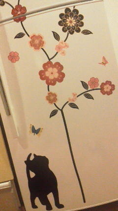

| 2012/04 09 Mon | ひめたん(* ゝω・*)ノ その127 |
今日は温かかったから、気づいたら4時間お散歩してた(・o・ノ)ノ!
みてー中元さん家の冷蔵庫。可愛いしょー♪

それでは今日も質問返しに徹します(`・ω・')!
 剣道ってどう思う??
剣道ってどう思う??
ひめたんのまわりで剣道してる人ってあんま聞かないんよねー。
ユニフォームかっこいいよね//掛け声もっ
んー応援する(^O^)♪
 化粧講座良かったらよろしくです←
新しい美容院もう見つけた?それともメイクさんとかにしてもらうの?
化粧講座良かったらよろしくです←
新しい美容院もう見つけた?それともメイクさんとかにしてもらうの?
いつもお世話になってるメイクさんにやっていただいてます!
教師ってどう思う?
いいじゃんっ(*^^*)
ひめたん楽しかったクラスの先生のことは今でもずっと覚えてるよっ
素敵な先生になって下さい♪
 絶チルって、超能力のアレ?ひめたんはリアルタイムだったっけ...?
絶チルって、超能力のアレ?ひめたんはリアルタイムだったっけ...?
そっそ(ω)
ひめたんリアルタイムで見よったよ。当時小学6年生!
「おしい!広島」のサイト見ました?
見たみた(^^)☆
おしいはおいしいんだお。うん!
いつかおいしい!広島県にならんかなー...
早口言葉練習してますか?ww
半年前に部活引退してから全然やってない(∀)てへぺろ
おかげでら行がはっきり発音できなくなりつつあります...。
これ先輩にばれたらああごめんなさいっ
そして後輩にばれたら会わせる顔がないです。あんなに怒ってきたのに☆☆
ディズニーランドのお姉さんって、ダンサーみたいな人?スタッフみたいな人?
アトラクションのお姉さんもショップのお姉さんも楽しそう(o>ω<o)
そこにはあんまこだわってなかったなあ。
とにかく夢の国で働きたいのひめたん。
塾とか行ってますか?
中学生の時は通ってましたよ(*^^*)
とっても素敵な塾でした。塾ってかあれは家!家族!
広島のときは、アルパークとかよく行った?
アルパーク行ってましたよ!
スクール生時代に毎年イベントもしてたもん(^^)☆
あと東棟は、朝早くに並んでたまごっち買った思い出も。うん!
焼き肉好きカナ?
好きすき(*/ω＼*)
広島が恋しくなるのはどんなとき☆?
地元の友達とメールしてると「ああ帰りたい*'`*」ってなるー。
でも選抜入るまでは帰りませんきっぱり!
てへぺろ←意味はわかんない。おしえて?
てへ
 + ぺろ
=てへぺろ☆
+ ぺろ
=てへぺろ☆
+ ぺろ
=てへぺろ☆
好きなTV番組教えてー(=^エ^=)
 朝のニュースとかは、何て番組を見てる?
朝のニュースとかは、何て番組を見てる?
ひめたんのテレビトーク◎
朝はめざましテレビで始まります。
夜はドラマはあんまチェックしてないかも('・ω・`)
バラエティは好きですよ!
乃木どこも好きだけど3回に1回は寝てたりする。え
でも録画してるから♪
 裁縫しないのか〜ボタンとか取れたら困るんぢゃないの?
日芽香ちゃんならすぐに裁縫できるようになると思いますよ?
裁縫しないのか〜ボタンとか取れたら困るんぢゃないの?
日芽香ちゃんならすぐに裁縫できるようになると思いますよ?
裁縫覚えてみてはどうですか?
ボタン取れたらいつか付けてもらおうって思ってとっておく。
気づいたら無くなってる('・・`)
お裁縫はできるほうがいいんかなあ。お裁縫する気なくて
地元にソーイングセット置いてきたんだけどなあ☆
 まだ部屋の収納とか家具とか揃ってないの?
IKEA派?ニトリ派?家具にこだわりとかってある?
まだ部屋の収納とか家具とか揃ってないの?
IKEA派?ニトリ派?家具にこだわりとかってある?
 IKEAで何か雑貨とか家具と買ったの?
IKEAで何か雑貨とか家具と買ったの?
家具ねっいろいろ話し合ってはいるんだけどね意見がまとまらんのんよね←
IKEA派!この前初めてIKEAに感動しました!!!
おっきい家具は買わなかったけどハンガーとか、サーモンとか買って帰りましたよ☆
 ロッククライミングやってるんだけど、どう思う?
ロッククライミングやってるんだけど、どう思う?
へーすごーい怖そうっ
リポDのcmのやつだよね??んーおとこのこって感じ(。・ω・。)!
 乃木坂のメンバーってけっこう頭いいメンバーいると思うけど、
乃木坂のメンバーってけっこう頭いいメンバーいると思うけど、
ひめたんもけっこう頭良かったりする??
みんなは賢いねえ♪
中元さんはまったくそんなことないでございます(д)
 宝物は?
宝物は?
ひめきゅんさん、めんばー、おともだち。
ひめたんに関わる全てのみなさんが宝物です。
いつもありがとう(^ω^)♪
(*´・ω・*)ひめたん
コメント(101)
2012/04/09 23:30